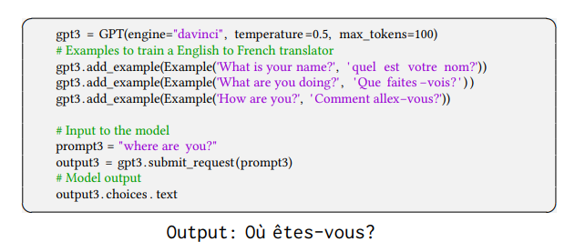
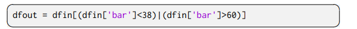

CodeX
Introduction
在 GPT 模型基础上，使用 Github 上的代码做了微调。
（GPT-3 的卖点确实是不需要微调→为了模型创新性，但这里属于应用创新性，所以微调也无妨。
本质：GPT 在新的数据集上训练，得到新的应用。
结果

生成一个答案：28.8%；跑一百遍，利用单元测试（文档+单元测试的人工工作量过大，不现实）得出最优解：77.5%；100次运行+利用给出的排序算法自动给出最优解：44.5%。
模型↑，准确率↑。
验证集
human-eval: 164个编程问题，如算法问题、简单的数学问题、软件面试问题等。

164个问题，每个问题都提供了函数的签名、文档、实现和多个单元测试（平均每个问题7.7个）。
均为手动实现→防止代码已出现在训练集中。
详细
评估框架
正确性的评估
往往采用
BLEU score：生成序列与真正的标号序列在一些子序列上的相似度，是一种模糊的匹配。BLEU score无法胜任代码匹配的评估上。
该模型采用
pass@k metric: k 表示可以生成 k 个不同结果，有一个正确就视为正确。
流程
生成 n (n>k) 个样本，然后每次从里面随机采 k 个出来（因为重复生成 k 个样本太贵了），看是否有正确答案。

E 表示对164个值求平均，c 表示正确个数。
（公式虽然简单，但数很大时，计算量过大，这里采取了一定处理避免超限（把组合数化简）。
问题
k较大时，结果会过于乐观；结果的排序很重要，但这里无法对排序进行评估。
后续会讨论。
验证集
运行代码的沙盒
类似虚拟机。
防止恶意代码影响机器。
实现
数据的收集
179 GB python 文件，清洗得到 159 GB。
问题：没有关注代码的开源协议。
模型
从 GPT-3 微调→精度上竟然没有提升（可能是因为微调的数据集过大），但收敛速度快，也就这样做下去了。
分词
空格
代码中词的分布与自然语言中词的分布有很大区别，所以 GPT-3 的分词器在表示代码时不够有效。效率低下的一个主要原因是空格的编码，因此这里在 GPT-3 的分词器的基础上加入了额外的一系列 tokens用来表示不同长度的空格，这样在表示代码时可以少使用30%的token。
停止符
生成答案时，遇到 ”\nclass“, ”\ndef“, ”\n#“, ”\nif“, or ”\nprint“ 时停止。
核采样
- 一般采样：每次做序列生成时，将当前序列放进模型，得到当前最好的单词，但：无法保证全局最优；每次得到的输出都确定，无论运行多少遍得到的结果都相同。
- 改进：Beam Search（束搜索），维护32个或128个当前最好的候选。
- 核采样：构造一个最小候选集，使得： （文章中 p 取了0.95），然后重新归一化集合内词的概率，作为候选集。
优点：保证了结果多样性的同时过滤掉了特别不靠谱的词。
结果
模型大小与测试损失的关系
不同 Temperature 下，样本数量与 pass@k 的关系
Temperature：将单词数列输出除以 temperature，达到调和概率值的目的。
样本数量较大时，温度越高效果越好→这可能是由于样本多样性的增加。
不同样本数量下的最佳 Temperature

排序算法的比较
Oracle：在单元测试上测完后再排序得到结果，现实实现不现实。
Mean logp：把每个解中的候选词在 softmax 上的概率作 log 运算后再求均值，将均值最高的解作为结果。
用 BLEU score 对正确/错误的解决方案进行打分
发现其很难正确区分解决方案是正确的还是错误的。
CodeX-S
CodeX-S
背景
训练集为 Github 上爬下来的代码，评估是根据一些写好的注释来预测实现，二者形式不统一。
方法
收集了新的数据集（Supervised Fine-Tuning 数据集），该数据集与评估集形式相近。
在新数据集上微调得到 CodeX-S。
效果
只生成一个答案：28.8%→37.7%。
CodeX-D
函数实现→实验文档。
数据集
调整了训练集数据的顺序，将注释放到最后。
验证
- 人眼看；
- 先用CodeX-D生成文档，再用文档和函数签名生成函数实现，看结果能否过单元测试。
局限性
样本有效性不够，需要看很多代码才能写比较简单的代码。
docstrings 的书写规范。定义了多个测试单元，发现链接的单元越多（docstrings 越长），通过率越低（指数级下降）。
处理数学问题的能力较差。

影响
- bug
- Github 男性用户居多→性别歧视问题
- 替代人工的社会性问题
- 恶意使用
- ……
PolyCoder
在代码上训练的语言模型越来越多，考虑到这些模型中涉及的模型大小和训练方案的多样性，以及这些模型之间缺乏比较，许多建模和训练设计决策的影响仍不清楚。本文对现有的跨各种编程语言的代码模型——Codex、GPT-J、GPT-Neo、GPT-NeoX和CodeParrot——进行了系统评估并发布了PolyCoder模型，该模型基于 GPT-2 架构并在12种编程语言上进行预训练。
PPL结果如图6所示，PolyCoder在C语言中优于Codex和所有其他模型。仅比较开源模型，PolyCoder在C、JavaScript、Rust、Scala和TypeScript中的性能要优于类似大小的GPT-Neo 2.7B。
在除C语言之外的11种语言中，所有其他开源模型，包括PolyCoder，都明显比Codex更糟糕。这可能是因为PolyCoder是在不同语言的不平衡混合上训练的，C和C++密切相关，并且在整个训练语料库中占主导地位。因此，较大的总容量(因为长文件)使C语言成为PolyCoder最“青睐”的语言。PolyCoder在c++中表现不如Codex的原因可能是由于c++语言的复杂性和Codex的上下文窗口大小明显较长(4096，而PolyCoder的2048)，或者因为Codex可能在更多的c++训练数据上进行训练。
资源：https://github.com/2FVHellendoorn/2FCode-LMs
Synchromesh
Synchromesh: 齿轮的同时咬合装置。
Motivation
大模型虽好，但它们在code generation任务中：
可能错误地意会 developer 的 intent
生成跑不起来的代码
无法通过仅扩大模型规模来提升性能的可靠性
Approach
framework
SYNCHROMESH框架概述。对于用户的查询，首先使用目标相似度调优(Target Similarity Tuning, TST)检索高相关性示例。然后，通过约束语义解码(Constrained Semantic Decoding, CSD)对程序进行增量采样，它查询补全引擎(Completion Engine, CE)以在代码生成期间强制执行约束，而无需重新训练或微调语言模型。
TST

目标相似度调优改进了合成SOL查询的示例选择的例子。在(a)中，提示示例遗漏了关键查询结构(分组和计数)。对于这个例子，GPT-3生成了一个无效的查询(b)。对于TST，检索了一个相关的例子，GPT-3成功地适应了这个例子来回答用户的问题(c)。
（Sentence-Bert：语义相似度计算。
ab 流程失败原因：基于了描述相似性而不是 SQL 查询的相似性（简单描述：形式上相似，但逻辑上不相似）。比如在这里，所选示例中的SQL查询的结构过于简单，与所需 SQL 查询的结构有很大的不同。
加入 TST：
$D$ 是程序和相关表达的数据集，$Di=(p_i,u_i)$ 。$S(p_a,p_b)∈[0,1]$ 表示程序之间的归一化相似度度量。 如果 $f\theta$ 是一个预训练好的自然语句相似度模型，那么 TST 就是对 $f$ 进行微调来根据 $S$ 给出的目标程序的描述来预测目标程序之间的相似度。最后，将均方误差损失最小化：
论文中使用了 classical tree edit distance algorithm 来定义 $S$ 以比较抽象语法树（Abstract Syntax Trees）。
对应 ac 流程，可以发现问题和示例的表述在自然语言中完全不同，但它们在所描述的SQL查询中具有相似性。
CSD & CE
TST 只能引导 LLMs 走向正确的结构，无法保证正确地填充所有具体的实现细节。
可以看到，a 中生成反了（一般来说，无约束语言模型经常犯这样的错误：使用未声明的变量、在生成复杂表达式时失去对嵌套级别的追踪或者使用错误类型的参数调用函数，而即使是最小的错误也会阻止生成的代码执行）。
CSD 通过构造(而不是事后修复)来防止实现错误。假设我们可以访问一个 oracle（我们称之为 CE），它可以接受一个部分程序并返回所有 tokens ，这些 tokens 可以将该部分程序扩展为一个完整的正确程序。当LLM逐个 tokens 生成程序时，CSD 确保从 CE 返回的集合中采样下一个 tokens 。如上图，在“on”子句中生成“T1.”之后，SQL CE解析名称并约束模型输出“Flights”表中的一列。这将修复先前在生成过程中看到的错误，并生成正确的SQL查询。
给定一个部分程序，CE 将返回一个正则表达式，该正则表达式与后面的有效 tokens 匹配。
CE 本质上是对 Decoder 的输出词表分布做了限制。CE 为人工实现。
（DoB: Date of Birth.
Experiments

Exec. 和 Acc. 都表示匹配精度。
Results
- 在decoding阶段动态执行 constrain，表现比 generate-then-test 好。
- 显著提高了生成代码的合法性；有助于生成更长的代码。
- 使用 SYNCHROMESH 方法增强的LLMs表现不如监督模型，但比 CodeX 好。
Jigsaw
Jigsaw是多模态的（如下图所示），它可以通过输入表示意图的自然语言字符串或一组输入-输出示例来生成作为输出的代码片段。

Contributions
- 提出了一种架构，通过使用基于程序分析和合成的技术和多模态规范来增强黑盒ptlm来执行代码合成。已经在一个叫做Jigsaw的工具中实现了架构。已经开发了一个Jupyter笔记本扩展，允许用户与系统无缝交互。
- 描述了ptlm所犯的常见错误类别，即引用错误、参数错误和语义错误。基于这些错误，在Jigsaw中设计了程序分析和合成技术，以修复由ptlm生成的代码片段中的此类错误。还设计了从用户反馈中学习的技术，并随着使用而改进。
- 已经创建了两个具有多模态规范的Pandas数据集(在补充材料中提供，并将发布给社区使用)。通过使用两个最先进的PTLMs，发现与两个数据集上的基线相比Jigsaw的精度显著提高。
Architecture

核心：post-processing 阶段。包括特征、转换错误的代码片段、从用户反馈中改进。
Pre-trained Language Models

Pre-processing

维护一个包含可能的问答对的上下文库（Jigsaw通过从Pandas的API文档中抓取和注释示例，以及用于教授API的其他示例资源(来自教程等)，离线创建了一个上下文银行。），然后从上下文库中选择与当前查询相似的元素，并将这些元素添加到上下文中。当用户提出一个问题时，该问题将被馈送到上下文选择器，上下文选择器使用文本相似度度量从上下文库中挑选最相关的提示。
在Jigsaw无法产生正确答案的情况下，让用户对不正确的Jigsaw代码进行更改，并使用这样的反馈来增强上下文银行。
ptlm还接受一个称为温度的输入参数。温度越低，准确的答案就越少。数值越高，得到的答案就越不准确，但也就越多样。
Post-processing
Jigsaw 的后处理步骤的目标是过滤和转换 PTLM 产生的输出，以产生正确的答案。
衡量正确性的标准是生成的代码应该通过用户指定的 I/O 示例。
大约30%-60%的情况(取决于 PTLM 和数据集)，PTLM 产生正确的输出。在其余的情况下，Jigsaw 使用PTLM生成的候选解决方案作为起点，并使用简单的程序分析和综合技术对候选代码片段执行转换，以生成正确的解决方案。
Correctness checks
在有I/O示例的情况下，我们从每个指定的示例输入开始运行候选代码段，并检查所产生的输出是否与相应的指定输出一致。
Variable Name transformations
在某些情况下，PTLM 生成了准确的代码片段，但是使用了不正确的变量名。由于用户在自然语言描述或测试用例中指定输入和输出变量，这个后处理步骤使用来自多模态输入的这些信息，以及范围内的变量名，通过系统地搜索潜在变量，并尝试变量名的可能排列和组合，以通过测试用例。

Argument transformations
在某些情况下，PTLM 生成的代码片段带有正确的方法名称和方法序列，但是带有不正确的参数。
replace ‘United States’ in ‘location’ by ‘US’ and ‘3434’ in ‘zip’ by ‘4343’
应该为：
“在这种情况下，这个后处理步骤系统地从推断的参数空间中搜索给定方法/函数名序列的参数。为了在参数空间上实现系统搜索，我们采用Autopandas工具[9]所使用的方法，并进行了以下修改。Autopandas使用图形神经网络，将I/O示例作为输入，来选择方法名。然而，我们需要大量特定领域的数据来训练这样的神经网络。在我们的例子中，我们简单地从PTLM的输出中提取方法名，给定自然语言查询(这很容易扩展到Pandas以外的编程领域)。执行搜索的参数空间是通过使用自然语言文本输入、PTLM输出中的参数、数据帧模式中的列名以及作用域中的变量推断出来的。我们扩展了Autopandas中的生成器，以考虑复杂的数据类型，如列表和字典，并且我们扩展了考虑的api集，除了返回Pandas数据框架类型的api外，还包括返回Pandas系列类型(能够保存任何类型数据的一维标记数组)的api。通过这些修改，我们发现Jigsaw能够将PTLM生成的一些错误代码片段转换为正确的代码片段(如第5节所示)。”
AST-to-AST transformations
有时候会反复犯一些小错误，可以通过适当的AST-to-AST转换进行修复，这是从用户与Jigsaw的交互中学习到的。
作为一个具体的例子，我们发现GPT-3经常忽略按位的not操作符，并产生如下代码:

而不是：

（文章中的小错误：
而不是：

Learning from user feedback
Jigsaw的用户界面(集成到 Jupyter notebook 中)旨在让用户在 Jigsaw 错误的情况下提交正确的代码。Jigsaw可以通过吸收用户反馈进行改进。具体来说，当更多用户与Jigsaw交互时，作者设计了用于在预处理模块中更新上下文银行和在后处理步骤中进行AST-to-AST转换的技术。
Data2Vis
主要工作
- 将可视化设计表述为序列翻译问题的序列；
- 在小规模的训练集上训练模型，然后有效生成测试数据的可视化，展示其可行性；
- 开源的基于web的应用程序Data2Vis.
本文是第一个将深层神经翻译运用到可视化生成中的研究，之后的研究可以考虑从大规模数据中隐式的学习可视化设计和可视化分析规则。
模型

将数据可视化问题表述为一个序列到序列的翻译问题（seq2seq），我们输入序列是数据集（json格式），输出序列是一个有效的Vega-lite可视化格式。
为了能将seq2seq模型运用到非序列问题中，研究考虑使用双向RNN和注意力机制。
模型的基础是一个添加注意力机制的编码器-解码器架构。编码器是一个双向RNN。解码器就是基于编码器的输出结果去计算目标序列的概率的RNN。这个概率和解码器RNN的结果，目标序列之前的结果，以及注意力向量（context vector）有关。